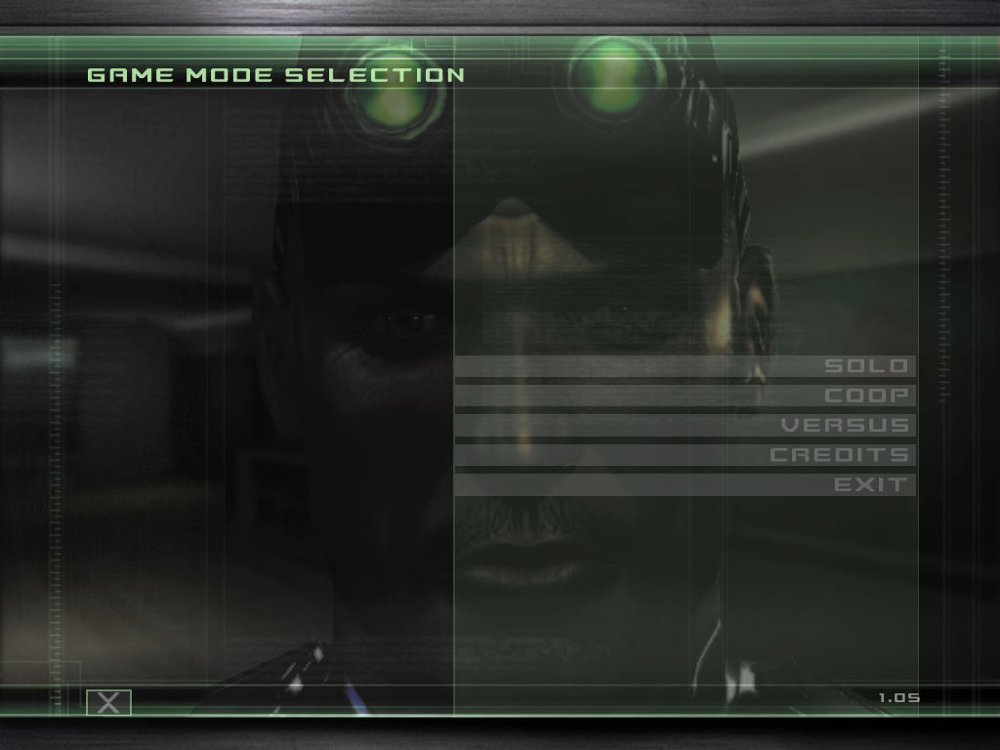
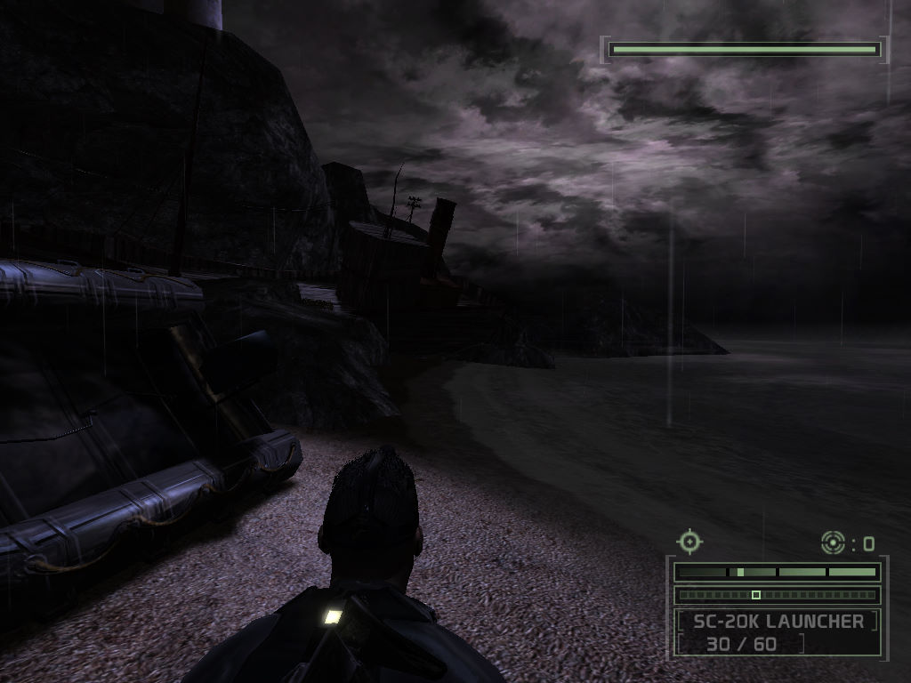

名稱：湯姆克蘭西之間諜遊戲3／縱橫諜海3／細胞分裂3：混沌理論／混沌法則
(Tom Clancy's Splinter Cell: Chaos Theory，英文版)
簡介：Ubisoft 2005年出品的潛行動作射擊遊戲，台灣由松崗代理進口，但並未中文化 [待補]。


保護：光碟StarForce 3.04
備註：VirtualBox無法執行，虛擬機請使用VMware。
檔案：splinter_cell_chaos_theory_1.00_To_1.05_euro.rar = 1.05更新檔
nocd105.rar = 1.05免光碟檔